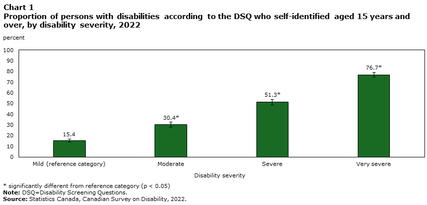
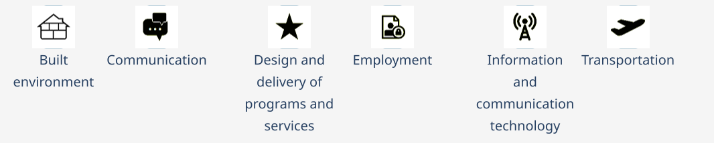
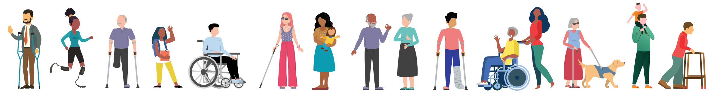
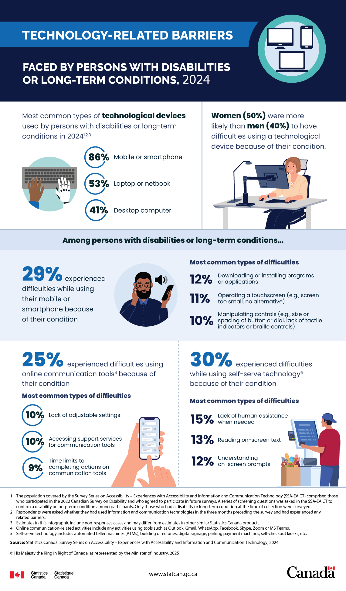
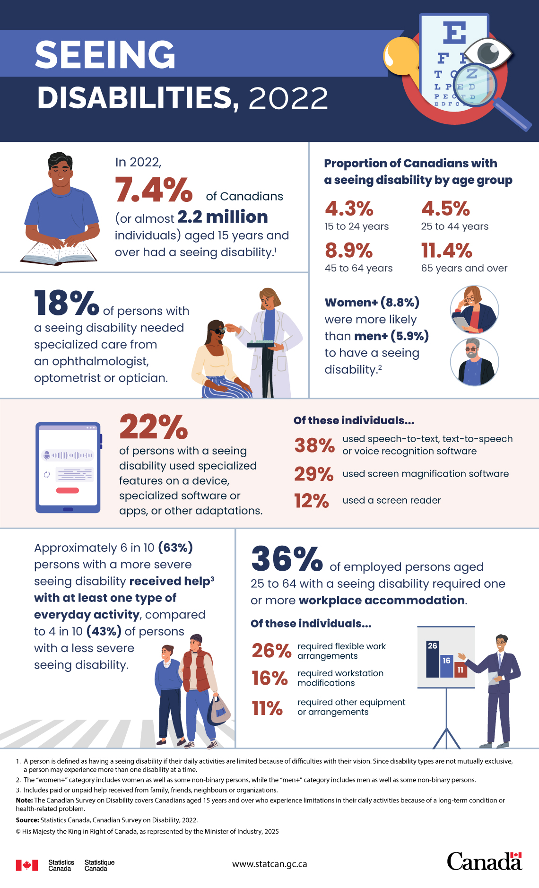
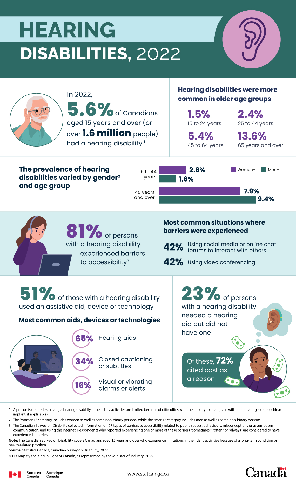
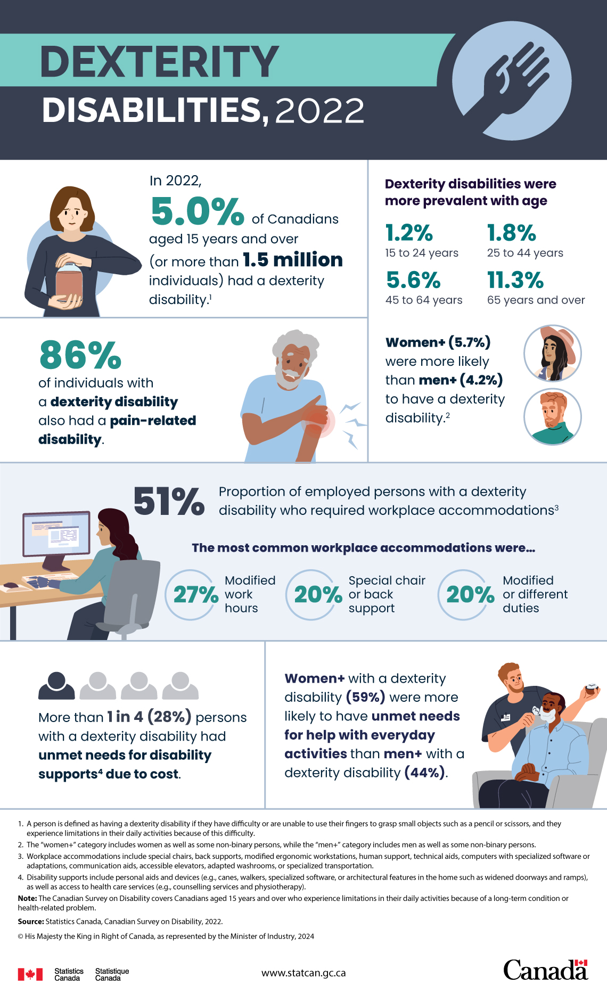

CPSC 599+601 Creative Computing
Lecture: Accessibility


2026-09-08
Schedule
(Subject to change with notification - in D2L > Course Information > Schedule)
| Week | Tuesday | Thursday |
|---|---|---|
| Week 1 (Aug 31 - Sep 4) | Lecture (Course Intro) | Lecture (Creative Computing: Versioning, Documentation, Integration) |
| Week 2 (Sep 7-11) | Lecture (Accessibility) | Lecture (Glueing Modalities: Sequencers, Mappers) + Mapping Tools Workshop 2026 |
| Week 3 (Sep 14-18) | (Personal) Pitch (Course Expectations and Project Ideation) | Lecture + Studio (Audio: Synthesis, Sampling, Spatial) |
| Week 4 (Sep 21-25) | Interactive Presentations (Audio) | Lecture + Studio (Vision: Graphics, Video, Projection Mapping) |
| Week 5 (Sep 28 - Oct 2) | Interactive Presentations (Vision) | Lecture + Studio (Touch: Haptics) |
| Week 6 (Oct 5-9) | Interactive Presentations (Touch) | Lecture + Studio (Interaction: Input, Cameras, Sensors, Embedded Computing) |
| Week 7 (Oct 12-16) | Interactive Presentations (Interaction) | (Guest) Lecture (Gen AI) by Ahmed Abuzuraiq |
| Week 8 (Oct 19-23) | (Group) Pitch (Project Ideation) | (Group) Project (Low-fidelity Prototyping) |
| Week 9 (Oct 26-30) | Interactive Presentations (Low-fidelity Prototype Showcase) | (Group) Project (High-fidelity Prototyping) |
| Week 10 (Nov 2-6) | None (Term Break) | None (Term Break) |
| Week 11 (Nov 9-13) | (Group) Project (High-fidelity Prototyping) | (Group) Project (High-fidelity Prototyping) |
| Week 12 (Nov 16-20) | Interactive Presentations (High-fidelity Prototype Showcase) | (Group) Project (Final Version Prototyping) |
| Week 13 (Nov 23-27) | (Group) Project (Final Version Prototyping) | (Group) Project (Final Version Prototyping) |
| Week 14 (Nov 30 - Dec 4) | Interactive Presentations (Final Version Showcase) | Individual Reflections Due + (Group) Project Documentation Due + Lecture (Course Reflection) |
Today’s outline
- Lecture: Accessibility
- Statistics in Canada
- Assistive Technologies From: JooYoung Seo. Accessibility in HCI Seminar. (x)Ability Design Lab, School of Information Sciences, University of Illinois at Urbana-Champaign. 2025
- Ideation
Introduction
 ACM Interactions September-October 2026.
ACM Interactions September-October 2026.
In Canada
 Carrly McDiarmid and Rebecca Choi, Technical report on disability measurement in Canada. Reports on Disability and Accessibility in Canada. Statistics Canada. March 17, 2026.
Carrly McDiarmid and Rebecca Choi, Technical report on disability measurement in Canada. Reports on Disability and Accessibility in Canada. Statistics Canada. March 17, 2026.
In 2022, the prevalence of disability in Canada among the population aged 15 years and over, using the Disability Screening Questions (DSQ), was 27.0% (8.0 million individuals). Among them, approximately 3.2 million individuals self-identified as a person with a disability, which is almost two-fifths (38.5%) of persons with disabilities according to the DSQ and one in ten (10.4%) of the Canadian population aged 15 years and over.

What barriers?
Accessibility Statistics Hub. Statistics Canada.


Technology-related barriers
Technology-related barriers faced by persons with disabilities or long-term conditions, 2024. Statistics Canada. March 24, 2025.

Seeing disabilities
Seeing disabilities, 2022. Statistics Canada. January 3, 2025.

Hearing disabilities
Hearing disabilities, 2022. Statistics Canada. March 3, 2025.

Dexterity disabilities
Dexterity disabilities, 2022. Statistics Canada. December 3, 2024.

And many more disabilities!
- Flexibility
- Mobility
- Pain-related
- Learning
- Mental health-related
- …
- Not necessarily visible!
Assistive Technologies
From: JooYoung Seo. Accessibility in HCI Seminar. (x)Ability Design Lab, School of Information Sciences, University of Illinois at Urbana-Champaign. 2025
Met at Dagstuhl Seminar 23252 Inclusive Data Visualization. Jun 18-23, 2023.
Assistive Technologies (AT) and Information Communication Technologies (ICT)
- AT: Tools and devices designed to help individuals with disabilities perform tasks and participate in daily life.
- ICT: Technologies that provide access to information and communication, such as computers, internet, mobile devices, and software applications.
- Intersection: Understanding how AT and ICT intersect is crucial for creating accessible digital experiences. ICT should be compatible with and usable by various AT.
From: JooYoung Seo. Accessibility in HCI Seminar. (x)Ability Design Lab, School of Information Sciences, University of Illinois at Urbana-Champaign. 2025
Assistive Technologies for Visual Impairments
From: JooYoung Seo. Accessibility in HCI Seminar. (x)Ability Design Lab, School of Information Sciences, University of Illinois at Urbana-Champaign. 2025
Screen Readers
- Software that converts text and interface elements into speech or braille.
- Examples: JAWS, NVDA, VoiceOver, Orca
- NV Access - NVDA Screen Reader
- Freedom Scientific - JAWS Screen Reader
From: JooYoung Seo. Accessibility in HCI Seminar. (x)Ability Design Lab, School of Information Sciences, University of Illinois at Urbana-Champaign. 2025
Magnification Software
- Enlarges portions of the screen to make content easier to see.
- Examples: ZoomText, Windows Magnifier, macOS Zoom
From: JooYoung Seo. Accessibility in HCI Seminar. (x)Ability Design Lab, School of Information Sciences, University of Illinois at Urbana-Champaign. 2025
Braille Displays
- Electronic devices that display text in braille, often used with screen readers.
- Provides tactile access to digital information.
From: JooYoung Seo. Accessibility in HCI Seminar. (x)Ability Design Lab, School of Information Sciences, University of Illinois at Urbana-Champaign. 2025
Assistive Technologies for Auditory Impairments
From: JooYoung Seo. Accessibility in HCI Seminar. (x)Ability Design Lab, School of Information Sciences, University of Illinois at Urbana-Champaign. 2025
Assistive Listening Devices (ALDs)
- Amplify and clarify sound for individuals with hearing loss.
- Types: Hearing aids, cochlear implants, FM systems, induction loops.
- National Institute on Deafness and Other Communication Disorders (NIDCD) - Assistive Devices for People with Hearing, Voice, Speech, or Language Disorders
From: JooYoung Seo. Accessibility in HCI Seminar. (x)Ability Design Lab, School of Information Sciences, University of Illinois at Urbana-Champaign. 2025
Captioning and Subtitles
- Textual representation of audio content in videos and live events.
- Essential for accessibility of multimedia content.
From: JooYoung Seo. Accessibility in HCI Seminar. (x)Ability Design Lab, School of Information Sciences, University of Illinois at Urbana-Champaign. 2025
Assistive Technologies for Motor Impairments
From: JooYoung Seo. Accessibility in HCI Seminar. (x)Ability Design Lab, School of Information Sciences, University of Illinois at Urbana-Champaign. 2025
Switch Devices
- Allow users to interact with technology using alternative input methods.
- Activated by various movements: buttons, head switches, sip-and-puff.
From: JooYoung Seo. Accessibility in HCI Seminar. (x)Ability Design Lab, School of Information Sciences, University of Illinois at Urbana-Champaign. 2025
Eye-Gaze Systems
- Track eye movements to control a computer cursor or other devices.
- Enables hands-free interaction for individuals with limited mobility.
- Tobii Dynavox - Eye Tracking
From: JooYoung Seo. Accessibility in HCI Seminar. (x)Ability Design Lab, School of Information Sciences, University of Illinois at Urbana-Champaign. 2025
Voice Control Software
- Allows users to control computers and devices using voice commands.
- Examples: Dragon NaturallySpeaking, Siri, Google Assistant, Alexa
- Nuance - Dragon Professional
From: JooYoung Seo. Accessibility in HCI Seminar. (x)Ability Design Lab, School of Information Sciences, University of Illinois at Urbana-Champaign. 2025
Assistive Technologies for Cognitive & Speech Impairments
From: JooYoung Seo. Accessibility in HCI Seminar. (x)Ability Design Lab, School of Information Sciences, University of Illinois at Urbana-Champaign. 2025
Text-to-Speech (TTS)
- Synthesizes spoken words from digital text.
- Benefits individuals with reading difficulties or speech impairments.
- Often integrated into screen readers and other applications.
- ReadSpeaker - Text to Speech Solutions
From: JooYoung Seo. Accessibility in HCI Seminar. (x)Ability Design Lab, School of Information Sciences, University of Illinois at Urbana-Champaign. 2025
Reading Aids
- Tools to support reading comprehension and fluency.
- Examples: dyslexia fonts, text highlighting, line readers, optical character recognition (OCR).
From: JooYoung Seo. Accessibility in HCI Seminar. (x)Ability Design Lab, School of Information Sciences, University of Illinois at Urbana-Champaign. 2025
Memory Aids
- Devices and software to assist with memory and organization.
- Examples: Reminder apps, digital calendars, note-taking software, voice recorders.
From: JooYoung Seo. Accessibility in HCI Seminar. (x)Ability Design Lab, School of Information Sciences, University of Illinois at Urbana-Champaign. 2025
Testing with Assistive Technologies
From: JooYoung Seo. Accessibility in HCI Seminar. (x)Ability Design Lab, School of Information Sciences, University of Illinois at Urbana-Champaign. 2025
Why Test with AT?
- Ensures real-world accessibility for users who rely on these tools.
- Identifies usability issues that may not be apparent through other testing methods.
- Validates conformance with accessibility standards.
From: JooYoung Seo. Accessibility in HCI Seminar. (x)Ability Design Lab, School of Information Sciences, University of Illinois at Urbana-Champaign. 2025
Testing Methods
- Manual Testing: Involving users with disabilities who use AT to test the ICT.
- Automated Testing: Tools can check for some types of AT compatibility issues, but manual testing is crucial.
- Usability Testing: Observe users with disabilities using AT to complete tasks within the ICT.
From: JooYoung Seo. Accessibility in HCI Seminar. (x)Ability Design Lab, School of Information Sciences, University of Illinois at Urbana-Champaign. 2025
AI testing?
When generating code, LLMs have an unfortunate bias towards producing accessibility antipatterns since every major LLM currently available is trained on decades of inaccessible code.
Building a general-purpose accessibility agent—and what we learned in the process - The GitHub Blog. May 15, 2026.
Common AT for Testing
- Screen Readers: NVDA, JAWS (common for web accessibility testing)
- Magnification Software: Built-in OS magnifiers
- Keyboard-only Navigation: Testing without a mouse
- Voice Control: Operating systems’ built-in voice control features
From: JooYoung Seo. Accessibility in HCI Seminar. (x)Ability Design Lab, School of Information Sciences, University of Illinois at Urbana-Champaign. 2025
AT Related Legislation
From: JooYoung Seo. Accessibility in HCI Seminar. (x)Ability Design Lab, School of Information Sciences, University of Illinois at Urbana-Champaign. 2025
Examples of Legislation
- Americans with Disabilities Act (ADA) (USA): Mandates accessibility in various areas, including ICT in some contexts.
- Section 508 of the Rehabilitation Act (USA): Requires federal agencies to make their ICT accessible.
- Accessibility for Ontarians with Disabilities Act (AODA) (Canada): Provincial legislation with ICT accessibility standards.
- European Accessibility Act (EAA) (EU): Sets accessibility requirements for a range of products and services, including ICT.
From: JooYoung Seo. Accessibility in HCI Seminar. (x)Ability Design Lab, School of Information Sciences, University of Illinois at Urbana-Champaign. 2025
No legislation in Alberta yet!
Alberta - Accessibility Services Canada
Alberta does not have a provincial accessibility legislation yet, however, it does have some related legislation. For example:
- Acts addressing specific aspects of accessibility (e.g., the Service Dogs Act)
- Acts dealing with other issues but which contain clauses on how disability affects the administration of that focus (e.g., the Student Financial Assistance Act)
Importance of Legislation
- Provides legal frameworks to ensure accessibility.
- Drives development and procurement of accessible ICT and AT.
- Promotes inclusivity and equal access for people with disabilities.
From: JooYoung Seo. Accessibility in HCI Seminar. (x)Ability Design Lab, School of Information Sciences, University of Illinois at Urbana-Champaign. 2025
Further Resources
- Web Accessibility Initiative (WAI): https://www.w3.org/WAI/
- Assistive Technology Industry Association (ATIA): https://www.atia.org/
From: JooYoung Seo. Accessibility in HCI Seminar. (x)Ability Design Lab, School of Information Sciences, University of Illinois at Urbana-Champaign. 2025
Conclusion
Your knowledge on multiple modalities gained through this course may become helpful for people with accessibility needs!
A personal example
LivePose Portal
Next steps
Develop
Is your personal GitHub repository ready?
- Create a GitHub account.
- Share it with ChristianFrisson by following his account.
- ChristianFrisson will create a new GitHub repository in ucalgary-cmd for your individual interactive presentations and pitch:
- Name:
CPSC599-601-CreativeComputing-F26-<username> - Visibility: first private, then your choice to make it public.
- License: your choice (tip: choosealicense.com).
- Name:
- ChristianFrisson will invite you to join your repository as admin.
Design
How accessible should what you would like to create in this course be?
- Sketch your design(s).
- Snap a picture.
- Upload your picture in your GitHub repository.